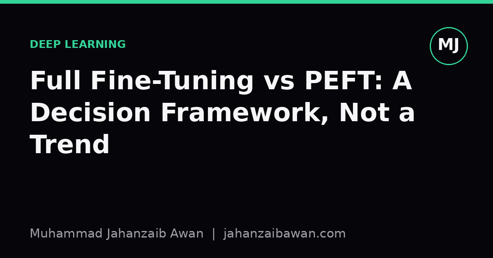

Full Fine-Tuning vs PEFT: A Decision Framework, Not a Trend
Choosing between full fine-tuning and parameter-efficient methods should follow from your data, compute, and deployment constraints, not from whichever paper trended last month.

Why this choice keeps getting made badly
Parameter-efficient fine-tuning, PEFT for short, has become the default answer to almost any adaptation problem. LoRA, adapters, prefix tuning: pick one, freeze the backbone, train a small number of new parameters, and ship it. This is often the right call. But I have seen it applied reflexively, as a trend rather than a decision, and that is where things go wrong. The question is never 'is PEFT good', it obviously can be. The question is whether the specific constraints of your task, your data, and your deployment target actually favour it over full fine-tuning. Those constraints differ from project to project, and treating the choice as settled in advance is a failure of rigour dressed up as pragmatism.
The appeal of PEFT is genuine and worth stating plainly. You touch a tiny fraction of parameters, so memory for optimiser states drops sharply, you can often fine-tune a large model on a single consumer GPU where full fine-tuning would need a small cluster, and you can store many task-specific adapters cheaply while sharing one frozen backbone. For teams serving dozens of custom models from one base, this is not a nicety, it is what makes the business model work at all. None of that is in dispute.
What is in dispute, or should be, is the assumption that these benefits always outweigh the cost. Full fine-tuning updates every weight, which means it can reshape the model's internal representations, not just steer them. When your target task is close to the pretraining distribution, steering is enough. When it is genuinely far from it, in vocabulary, structure, or reasoning style, steering can leave real capability on the table. A framework beats a trend precisely because it forces you to ask which situation you are actually in before you touch a config file.
A worked comparison with realistic numbers
Suppose you are adapting a mid-sized language model, on the order of seven billion parameters, for a narrow internal task: classifying support tickets into twelve categories using a labelled set of four thousand examples. Full fine-tuning here means optimiser states for seven billion parameters, which with a standard optimiser can require memory several times the model's own footprint, easily pushing you towards multi-GPU setups even at modest batch sizes. LoRA, by contrast, might introduce on the order of a few million trainable parameters, a reduction of three orders of magnitude, letting you train on a single GPU with a larger batch size and faster iteration.
With four thousand labelled examples, the practical risk with full fine-tuning is not underfitting, it is overfitting and catastrophic forgetting of general language ability that you did not mean to disturb. A small, low-rank update is often not just cheaper but genuinely better suited to a small dataset, because it has less capacity to memorise noise. In this regime, PEFT is not a compromise, it is the more appropriate tool, and a careful evaluator would expect it to match or beat full fine-tuning on held-out ticket data while costing a fraction of the compute.
Now change one variable: instead of four thousand examples you have four hundred thousand, spanning years of tickets with genuine shifts in product terminology and customer language. The dataset is now large enough to meaningfully update deep representations without simply memorising it, and the domain shift is large enough that a frozen backbone with a thin adapter may struggle to fully absorb it. This is the regime where full fine-tuning starts to close the gap and can pull ahead, provided you have the compute budget and, critically, a leakage-aware validation split that actually reflects the temporal drift in the data rather than a random shuffle that hides it.
The lesson from this comparison is not 'use PEFT for small data and full fine-tuning for large data', though that is a reasonable starting heuristic. The lesson is that the crossover point depends on how far your task sits from the pretraining distribution, and you only find that out by testing both on a properly held-out set, not by assuming it from the size of the dataset alone.
The questions a real framework should ask
A decision framework worth the name asks a short list of concrete questions before defaulting to either method. First, how much labelled data do you actually have, and how representative is your validation split of the deployment distribution, including any temporal or source-based leakage that a naive random split would hide. Second, how far is your target domain from the pretraining distribution in vocabulary, task structure, and required reasoning depth. Third, what is your actual compute and memory budget, not the budget you wish you had, and does it change if you need to serve many task variants from one base model. Fourth, what does deployment look like: do you need a single merged model with no runtime overhead, or can you tolerate loading small adapters at inference time.
These questions matter because the honest answer is often 'it depends, and I should test both'. PEFT methods are cheap enough that running a LoRA baseline alongside a full fine-tuning run, on the same held-out split, is rarely prohibitive, and it gives you an actual number rather than a received wisdom. I would treat any claim that one approach is categorically better as a red flag unless it comes with a comparison on a leakage-free split with a stated data size and domain gap. Trends move fast; the underlying trade-offs, memory, data volume, domain shift, and deployment shape, do not.
There is also a quieter, structural point. PEFT methods constrain the update to a low-rank or otherwise restricted subspace, which is a strong inductive bias. Strong inductive biases help when data is scarce relative to the gap you are trying to close, and hurt when the gap is large relative to the data. That single sentence is close to the whole decision framework in miniature, and it is worth internalising rather than outsourcing to whichever method a benchmark leaderboard currently favours.
A practical takeaway
Start with a PEFT baseline by default, because it is cheap, fast to iterate on, and often sufficient. But before committing to it for a real product, run a full fine-tuning comparison at least once on your actual leakage-aware split, with your actual data volume, and check whether the gap is trivial or material. If your dataset is small and close to the pretraining distribution, expect PEFT to hold its own or win outright. If your dataset is large and the domain shift is real, budget the compute to test full fine-tuning properly rather than assuming the efficient option will scale with you. The method that wins should be decided by evidence on your own held-out data, not by which technique happened to be trending when you started the project.